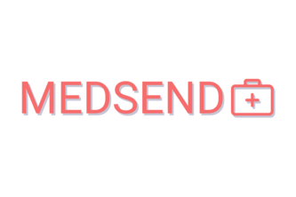

Medsend
Hack GSU - Fall 2017

Inspiration
We wanted to help distribute the extra supplies people had sitting around to those in need of it. Also items of
this nature can be expensive to buy, so donations help keep costs down for these important charities and
organizations.
What it does
It allows those with extra medical supplies, such as crutches, wheelchairs, stretchers, canes, etc, to donate
the items to us or a charity using our platform. Others who need these items can make an account and request
what they need. If the items available to be distributed to those in need are dolled out in a round robin
fashion, that is everyone who requested an item will get one of the item if there is enough before other get a
second or third of the item requested.
How we built it
We built is using Python and Flask as a back-end with a Jinja2, HTML, and CSS front-end